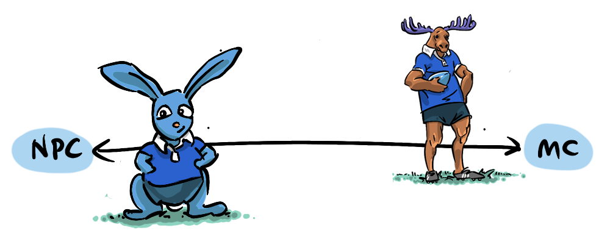
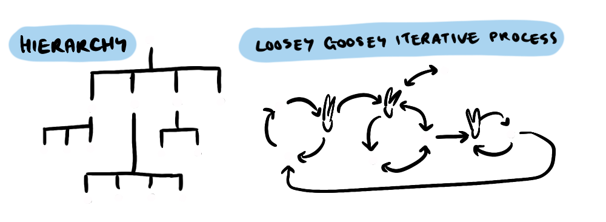

 Main Character spectrum">
When Stuart Krohn heard a commotion behind him at a Dodgers game, he turned to see that a man three rows back was choking. Dozens of people surrounding the man were panicking, impotent to help. But without a second thought, Stuart bounded up the three rows, lifted the man out of his seat, and began performing the Heimlich manoeuvre.
Stuart is one of those people that, when a group is called on, he assumes that he in particular is the one being addressed, and needs to respond. Stuart has what the kids these days call "Main Character Energy", what we would have called in the past "Leadership Qualities".
As a documentary filmmaker, I've filmed Stuart coaching on international rugby tours, leading a boy's and a girls team, over 15 years. I've interviewed him about his approach to leadership and taken notes, to begin with:
- He is always prepared: he knows every moment of the tour and is ready to adapt
- He is always there to support the players: delivering stirring pep talks, sharing reflective exercises, and being on call 24/7 for "deep and meaningfuls"
- He's able to foster trust and delegate—something I appreciate, as he lets me do my job without micromanagement.
I've tried to apply these principles to my own life, but I'm a very different sort of person—I'm not a natural leader, I like to work on a task alone, diligently, painstakingly, and when all is done… take all the credit!
When Stuart and I were on Safari with the teams, all players had been told in no uncertain terms not to feed or touch the monkeys that surrounded our break spot. But as a filmmaker, when I noticed Mekhi feeding a monkey, rather than stepping in… I filmed him, waiting for the scene to play out.
I'm a little concerned that this was not merely professional documentary objectivity—I am in some way dispositionally a documentary filmmaker, I tend to sit back and observe.
I have generally not assumed I'm central to decision making. In modern parlance I am at times an NPC—a term that originates from the world of video games. An NPC, or Non-Player Character is any agent in the game that's not being controlled by a real person. NPCs are there as foil for the player, something to test them, and provide context for their decisions. But NPCs don't make decisions themselves, they don't have agency. In the past this might have been seen as being laid back, or "going with the flow".
We are all on a spectrum from NPC to main character. And in the extreme main character energy can also go too far—it can lead to dismissing the concerns of others, or believing that by bellowing loud enough you can shape the reality around you, at worst it can lead to solipsism—the belief that you are the only one with any agency, that the world exists only in relation to you (like in a video game). This can be problematic.

Stuart doesn't fall into this trap, but he is on the opposite end of the spectrum to me. So, when on tour, I went to him for some advice. I mentioned I was feeling that at my age I should step into leadership more actively and he said something unexpected
"Being a leader can be stressful and thankless. You don't need to put yourself through that for the sake of it—you're excellent at what you do—why don't you just keep growing creatively?"
Perhaps Stuart was feeling the wear and tear of a long tour coming to a close—to be honest, it was real relief.
But as I've gotten older, I find I'm increasingly expected to lead, whether it's guiding a film crew on a documentary, delegating tasks for an edit assistant, taking a lead socially with male friends my age—who are notoriously useless at keeping in touch, and the biggest one of all, being a father.
Stuart further explained that he sees leadership in me, not in a domineering way but through cooperation. When I'm working with my crew, we have a very flat hierarchy, and I don't naturally delegate—instead I like to surround myself with capable people I can trust to take initiative and with whom I can have relaxed two-way creative conversations.
 Main Character spectrum">
In fact the only times I get into conflict are when someone is too concerned with hierarchy. For instance, one particular camera operator decided that the camera assistant, who was the same age and the same level of expertise as him, was essentially his errand boy because of a difference in official title. This came along with general impoliteness, teasing and bossy behaviour that has no place on my crew—one of the rare instances where I had to step in… he was also, incidentally, drunk a lot of the time (it was the last tour he came on).
Finally one leadership quality Stuart and I share is our ability to connect through vulnerability. I remember in one of our tour talent shows getting up and singing the theme song to Moana in front of the team, when I finished Stuart said quietly to me "They all trust you now."
Even though I don't feel the need to actively seek out leadership. I realise it will be expected of me. Thankfully, through spending time with Stuart, I've learned what sort of leader I am, and I've also learned some of the fundamentals of leadership that transcend leadership style.
- Being Prepared
- Providing support
- Delegating with confidence
- Building trust through vulnerability
- And most importantly—having the courage to step in when called on
That last one requires me to step out of that NPC persona and take on "Main Character Energy".
If you're wondering what happened to the choking man at the ball game: he survived—thanks to medical staff who arrived shortly after Stuart had. Stuart later learned that when choking on partially digested nachos, the Heimlich isn't the recommended approach… if you're interested, you should shove your fingers down the victims's throat and dig out the offending gunk… in case you ever run into that situation, and feel emboldened to step in.